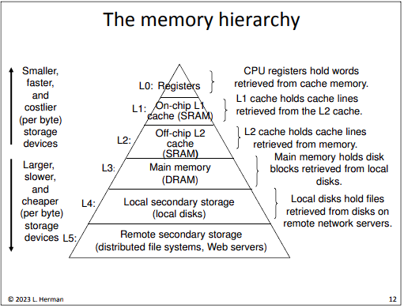

The instructor, Larry Hermon, does not reccommend reading Bryant and O'whateverTheBookIsCalled even though this class is based on that book.
A bit is a binary digit (Binary digIT -> BIT).
Bytes are stored in groupes of bytes called words.
32-bit machines have 32 wires carrying data between components.
The wires (usually 32 or 64 parallel wires) connecting components in a computer is called a bus.
In 32-bit machines, one word is 32 bits, or 4 bytes.
In memory, everythin is just bits. Howe they're treated and interpreted by the computer and its code determines if it's considered an int, char, etc.
Machine language is a series of numbers that tells the computer what to do. It's different for each computer/COU.
Assembly is a human-readable version of machine language
High-level languages such as C, Java, Python, etc. are turned into machine language by a compiler.
.data
sum: .word 0 # initialize sum to 0
x: .word 1 # initialize x to 1
.text
main: li $t3, 1 # store 1 in a register
loop: lw $t0, sum # get the value of sum
lw $t1, x # get the value of x
add $t0, $t0, $t1 # add x to sum
sw $t0, sum # update value in memory
add $t1, $t1, $t3 # add 1 to x
sw $t1, x # update value in memory
ble $t1, 10, loop # if x <= 10 go back to 'loop'
li $v0, 1 # print the value of sum
move $a0, $t0
syscall
li $v0, 10
syscall # end of program; stop running
In this example:
.data means what comes after this is data# starts a comment.text means what comes after th is is codemain and loop is the name of the functionsThe main components in a computer are:
The same assembly language shown above, when compiled to machine code, looks like this (in machine code for one particular machine):
87313612910
06702593235
14316801006
70259323514
97220173834
56100670259
32888302592
19613728100
67025932888
36813269002
85553377069
97872546305
53251312872
54631412
The memory hierarchy diagram on slide 12 of Larry Herman's Lecture 1 slides shows how some memory can be larger and others can be more expensive.

The operating system:
A Process is a running program (one or more threads of control) along with all the data associated with it (an address space)
The OS uses context switching to give a program the illusion that it's the only program running (a program isn't affected by running programs).
This simplified diagram of the unix virtual address space shows how unix memory works
Consider these two versions of a Java method
public static int sum(int[][] array) {
int i, j, ans= 0;
for (i= 0; i < array.length; i++)
for (j= 0; j < array[i].length; j++)
ans += array[i][j];
return ans;
}
public static int sum(int[][] array) {
int i, j, ans= 0;
for (i= 0; i < array.length; i++)
for (j= 0; j < array[i].length; j++)
ans += array[j][i]; // the only difference
return ans;
}
There is only one difference between these two methods in the code, and the two methods produce the same result. However, the first method is very much faster than the second one. We'll learn why when we learn about how we allocate and iterate through memory.
Consider this other Java method:
public static int sumArray(int[] array) {
int i, sum= 0;
for (i= 0; i < array.length; i++)
if (array[i] >= 500)
sum += array[i];
return sum;
}
This method adds numbers in an array together.
In a test done in class, sorted arrays were always faster to sum. We'll see why at the end of the semester or something.
C has:
Other than that, it's just like Java.
C is typically fully compiled (to machine code), and not interpreted or compiled to bytecode like Java is.
C facilitates direct manipulation of memory.
Consider this C program and notice how it works:
#include <stdio.h>
/* a nice C program */
int main(void) {
int x= 0;
x++;
printf("Just forget ");
printf("all about ");
printf("Java now.\n");
return 0;
}
Things to note:
#include <stdio.h>
import in Javastdio is standard input and output so C can use the computer's I/O./* this is a comment */
// comments like this in C
main() is where execution starts. It is not a method; it's a funtion.printf() prints to stdio.EXIT_SUCCESS insted of return 0, which is better stylistically, but both are equivalent./n is an escape sequence which prints a newline, but it's not "a newline".Use gcc by typing gcc, some options, and the source file name.
options:
-g-wall this option will give you warnings of what might be wrong with the c code.-o filename this option lets you specify the name of the outputted executable instead of the default a.out.ex:
program.c, use this command in the CLI:gcc program.c
program.c into an executable called a.out.program.c:gcc -g -Wall program.c -o program.x
program.c into an executable called program.x while using the options -g and -Wall.After compiling a program, run it by typing the name of the executable into the CLI. For example:
a.out by typing into the CLI:a.out
program.x by typing into the CLI:program.x
C requires that C programs be written in files which end with .c
program.cEnd of Today's Lecture